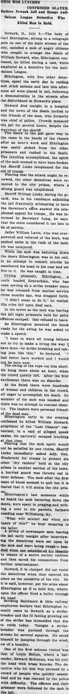
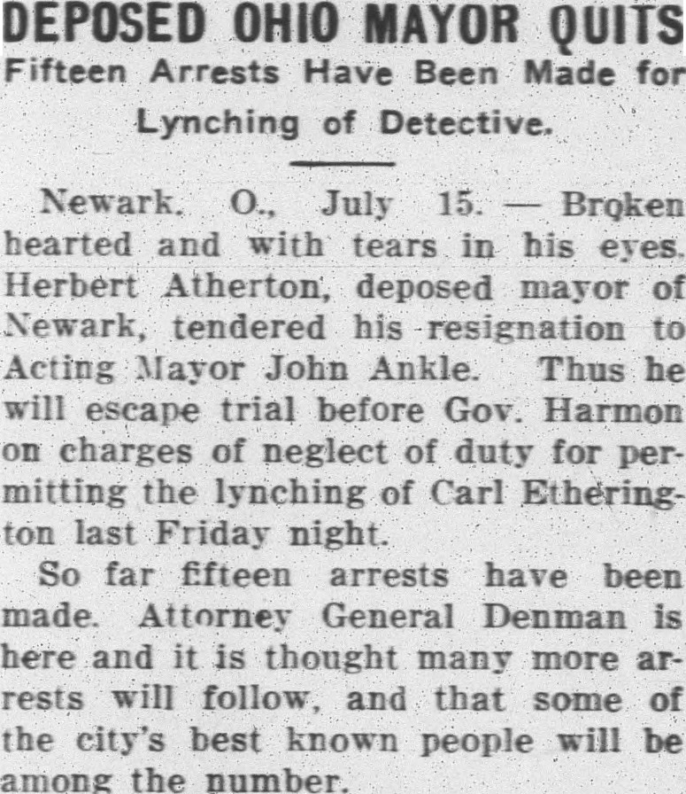

HN-373 · July 9, 1910 · Crime, Law & Justice > Executions, Sentencing & Wrongful Convictions > Extrajudicial mob executions and vigilantism
Source: Evening Republican, p. 2 — original page; later arrest report.
Report: In Newark, Ohio, a mob forced the jail doors and hanged Carl Etherington, a detective hired for Anti-Saloon League raids. The paper said he had acknowledged shooting William Howard, who later died; it described anger over an alcohol-related raid and an attempted call for troops after the hanging.
Assessment: The newspaper's account of an extrajudicial killing must not be interpreted as a lawful execution. It identifies an alleged confession in an emotionally charged, still-developing investigation. A subsequent article reports multiple arrests, not convictions of every arrested person. Follow-up open on court dispositions and Etherington's exact legal status.
Authentic images retrieved from Hoosier State Chronicles (Indiana State Library). Article crops are located using the archive's own OCR word coordinates and rendered at native crop resolution; article clips are assembled from the archive's own article-block images; page images marked "archive tiles" are stitched from the archive's own tiled page service at its 256-px tile cap; page images marked "issue PDF" are single pages rasterised from the archive's own issue PDF, with the page chosen by matching the headline against the PDF's text layer; page scans are reduced-size access renditions. No images were generated, mocked, or retouched.


Status: Archive images acquired
Authentic archive-owned image renditions were retrieved for this record and are displayed above. The source-acquisition manifest preserves the original pre-acquisition feasibility assessment.
URL (preserved verbatim): https://newspapers.library.in.gov/?a=d&d=EVRP19100709.2.5
Saved research report: Historical_Newspaper_Event_Research_353-377_2026-10-23.md
Evidence note: A newspaper report means a historical publication made a claim; it does not establish that claim as fact. Contemporary reporting is separated from later scholarly context and our own assessment.